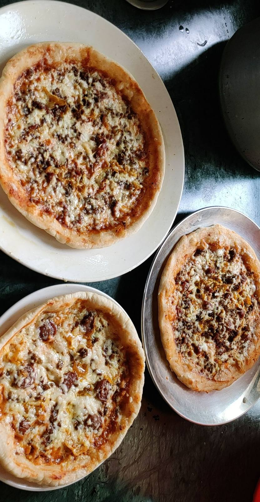
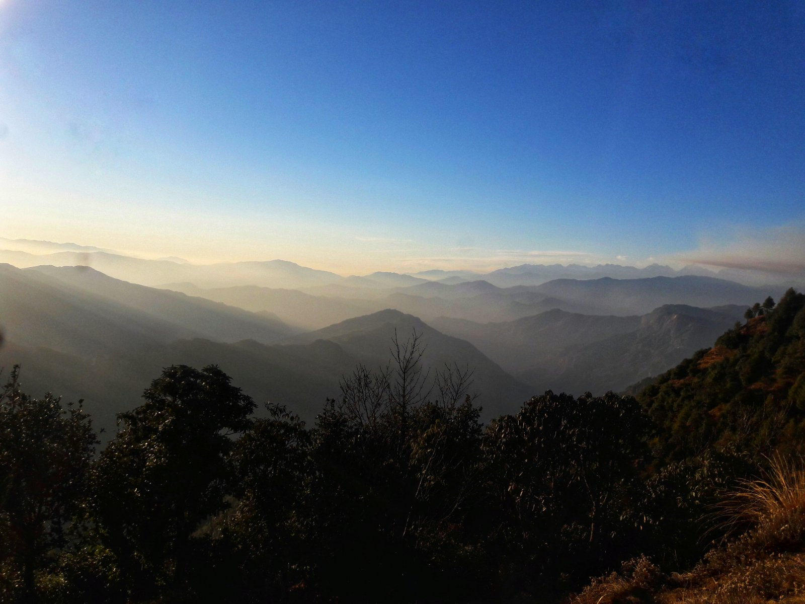
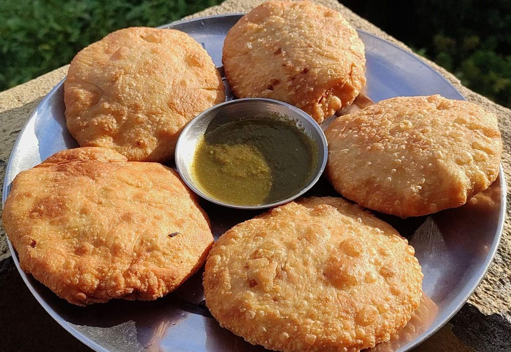
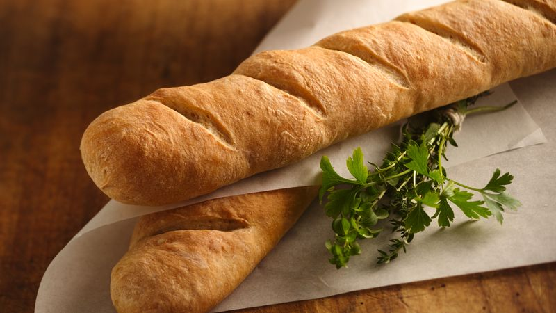

Keema Pizza
30 minutes
7 servings
501 calories
Ratings:
Keema Pizza
30 minutes
7 servings
501 calories
Ingredients of Keema Pizza
- 2 cup minced mutton
- 2 tablespoon pizza sauce
- 2 large pizza base
For Seasoning
- salt as required
- red pepper as required
- black pepper as required
- chilli flakes as required
For Garnishing
- 1 tablespoon coriander leaves
For Toppings
- 1 cup mozzarella
- 2 sliced tomato
- 4 sliced onion
Process
Step 1
To start with this delicious recipe, take the pizza bases and apply pizza spread or tomato spread on it.Step 2
Next, top the bases with sliced tomatoes and onions. Decorate these slices as per your wish.Step 3
On the other hand, cook the keema in a pressure cooker and add salt or pepper to it as per your taste. Once cooked, spread the keema/minced mutton on the pizza bases.Step 4
Next, sprinkle some mozzarella cheese on the pizza bases. Add salt, pepper, chili flakes as per your taste onto it.Step 5
Finally, bake these pizza bases at 150 degree Celsius for just 15 minutes. Once baked, take them out of the oven and cut it into triangular slices. You can also garnish it with coriander leaves. Serve hot.Palistha Shrestha
Student
Palistha Shrestha
Viber
Details
Age- 11years
Address- Koteshwor, Kathmandu
Contact number- 9843678889
Father's Name- Bimal Lal Shrestha
Mother's Name- Sarina Shrestha
D.O.B.- 29 August,2009
Nationality- Nepali
E-mail- palisthashrestha@gmail.com
Blood group- A+
Education
Keta Keti Pathsala
Sorakhutte, KathmanduPlaygroup - U.K.G.
2012 - 2015
Modern Indian School
Chobhar, KathmanduClass 1 - Ongoing
2016 - ongoing
About
A creative, intelligent person with good learning skills and has the ability to remember things easily. Currently studying in class 6 and who is also the deputy head girl of the junior wing in her school. Has actively taken part in numerous competitions and won prizes for not only academics but also for co-curricural activities. Aspires to become a dermatologist in her future.
In her free time loves to paint, sketch, do crafts and play badminton.
Photos



Chhahare, Nuwakot
2 hours
19 km
Chhahare is located in the region of Central Region. Central Region's capital Kathmandu is
Chhahare, Nuwakot
2 hours
19 km
Details
Municipality name: Thansing
Region name: Nuwakot
Country: Nepal
About
Chhahare, Nuwakot is a place in the region of Central Region in Nepal.
Nuwakot District, a part of Bagmati Province, is one of the seventy-seven districts of Nepal. The district, with Bidur as its district headquarters, covers an area of 1,121 km2 (433 sq mi) and had a population of 288,478 in 2001 and 277,471 in 2011. It is a historically important district in Nepal. Prithvi Narayan Shah died in Devighat of Nuwakot.
Nuwakot, being a hilly area with very less plains, most of the areas are still undeveloped. In last few years, huge changes are observable. The city areas are provided with schools, colleges, hospitals and the road infrastructure is also developed. Two hydro power stations are currently in operation, and from 2020 the first part of the biggest solar power station (Nuwakot Solar Power Station) was consented to the electric grid of Nepal. People are dependent on agriculture, teaching, foreign economy, livestock farming, business, hotels, Agro Tourism, Eco-Tourism and Khadya Bank, etc.
Map

Kachori
2 hours 45 mins
12 servings
171 calories
Ratings:
Kachori
2 hours 45 mins
12 servings
171 calories
Ingredients of Kachori
For Dough
- 2 cups all-purpose flour (maida), 250 grams
- ½ teaspoon salt
- ¼ cup Ghee or oil
- ½ cup water or add as required
For Lentil Stuffing
- ½ cup moong dal
- ½ tablespoon Ghee
- ¼ teaspoon turmeric powder
- ½ teaspoon red chilli powder>
- ½ teaspoon cumin powder
- ½ teaspoon dry ginger powder
- 1 teaspoon coriander powder
- 1 teaspoon crushed fennel seeds
- 1 teaspoon dry mango powder
- salt as required
Process
Making Kachori Dough
Step 1
Take 2 cups all purpose flour (maida) and salt in a bowl or pan. mix very well.Step 2
Add ¼ cup ghee.Step 3
With your fingertips mix the ghee with the flour for a few minutes till you get a breadcrumb like texture in the mixture.Step 4
Add water in parts and knead the dough till soft.Step 5
Cover the dough with a moist muslin or kitchen towel and let it rest for 30 minutes.Making Moong Dal Stuffing
Step 1
Rinse ½ cup moong dal in a bowl. Soak moong dal with enough water for 2 hours.Step 2
Later drain all the water very well and add the soaked moong lentils in a grinder jar.Step 3
Grind to a roughly coarse mixture.Step 4
Then heat a pan. Add ½ tablespoon ghee.Step 5
Once the ghee melts, keep the flame to the lowest or switch off the flame.Step 6
Add all the spice powders one by one.Step 7
Keep the flame to its lowest and mix very well. do make sure that the spices do not burn.Step 8
Then add the coarsely ground moong dal. Also add salt and 1 pinch of asafoetida.Step 9
On a low flame mix very well.Step 10
Saute with non-stop stirring for 3 to 4 minutes on a low flame. Check the taste and if required you can add more spice powders like red chili powder and mango powder or salt. Let the mixture become warm or cool down.Step 11
Now make small balls from this moong dal mixture. You can also spread some oil on your palms while making the balls. Keep aside.Assembling, Stuffing And Shaping
Step 1
After 30 minutes, lightly knead the dough.Step 2
Roll the dough into a log. Now cut the dough in equal portions. This will depend on the number of moong dal mixture balls that were made. Take a portion of the cut dough and flatten it with your fingers. Keep the edges thin while flattening. You can also use a rolling pin (belan) to flatten.Step 3
Now place the moong dal stuffing ball on the dough. Flatten the moong dal stuffing ball.Step 4
Bring the edges of the dough together and join them at the center. Excess dough can be pinched off and removed.Step 5
Flatten the top and then gently roll the kachori with a rolling pin to get a medium thickness kachori. Stuff and prepare all kachori this way. Keep them covered under a moist muslin or cotton cloth, so that they do not dry up.Frying Kachori
Step 1
Heat oil for frying and keep the flame to a low. When the oil is just hot enough, you can add the kachoris.Step 2
When the kachori start puffing up, then gently nudge each kachori with a spoon, so that they puff up well.Step 3
When the base becomes light golden, then gently turn them over. The frying takes about 7 to 9 minutes. So one has to be patient.Step 4
Continue to fry on a low to low-medium flame till they become golden. While frying you can turn them often to get an even color. Regulate the temperature from low to low-medium as required.Step 5
Fry till they become golden and nicely crisp from outside.Step 6
Place khasta kachori on kitchen paper towels so that excess oil is absorbed. Fry all kachori this way.Step 7
Serve khasta kachori warm accompanied with some fried & salted green chilies, tamarind dates chutney and green chutney. You can also serve them with chili garlic chutney or curd.
Patan Durbar Square
20 mins
6.9 km
Patan Durbar Square is situated at the centre of the city of Lalitpur in Nepal.
Patan Durbar Square
20 mins
6.9 km
About
Patan Durbar Square is situated at the centre of the city of Lalitpur in Nepal. Patan Durbar Square is a marvel of Newar architecture. The square floor is tiled with red bricks. There are many temples and idols in the area. The main temples are aligned opposite of the western face of the palace. The entrance of the temples faces east, towards the palace. There is also a bell situated in the alignment beside the main temples.
The Square also holds old Newari residential houses. There are other temples and structures in and around Patan Durbar Square built by the Newa People.
A center of both Hinduism and Buddhism, Patan Durbar Square has 136 "bahals"(courtyards) and 55 major temples.
The Major attraction of Patan Darbar Square
1. Patan Museum
2. Hiranya Varna Mahavihar
3. Golden Window
4. Mahabouddha Temple
5. Golden Temple
5. Krishna Temple
Map

Sponge Cake
45 minutes
8-10 servings
370 calories
Ratings:
Sponge Cake
45 minutes
8-10 servings
370 calories
Ingredients of Sponge Cake
- 225g softened butter
- 225g golden caster sugar
- 4 large eggs
- ½ lemon, zested
- 1 tsp vanilla extract
- 225g self-raising flour
- splash of milk
- Optional fillings of lemon curd, jam, lightly whipped cream
Process
Step 1
Heat oven to 180C/160C fan/gas 4, butter and line the base of two 20cm spring-form cake tins with baking parchment.Step 2
Using an electric whisk beat the butter and sugar together until pale and fluffy. Crack the eggs in one at a time and whisk well, scraping down the sides of the bowl after each addition.Step 3
Add the lemon zest, vanilla, flour, milk and a pinch of salt. Whisk until just combined then divide the mixture between the two tins.Step 4
Bake in the centre of the oven for 25-30 mins until a skewer inserted into the middle of each cake comes out clean. After 10 mins remove the cakes from their tins and leave to cool completely on a wire rack.Step 5
Fill how you like. My personal favourite is a good dollop of lemon curd and some fresh cream, then dust the top with icing sugar. Will keep for 3 days.Ludana Joshi
Student
Ludana Joshi
Viber
Details
Age- 15years
Address- Chabahil, Kathmandu
Contact number- 9843678999
Father's Name- Binayak Lal Joshi
Mother's Name- Shila Joshi
D.O.B.- 28 July,2005
Blood Group- AB+
E-mail- ludanajoshi@gmail.com Nationality- Nepali
Education
Lasana Pre School
Gongabu, KathmanduPlaygroup - U.K.G.
2009 - 2011
Modern Indian School
Chobhar, KathmanduClass 1 - Ongoing
2012 - ongoing
About
A hardworking, funloving person who is currently studying in grade 10 at modern indian school. Aspires to pursue computer engineering as a carrer in the future. Loves making drawings and edits. A big fan of music.
A person who loves to dance and is a creative person. Fond of writing imaginary stories and reading. Gets her creativity from watching movies and dramas.
Photos

Kalinchowk, Dolakha
5 hour 18 mins
144.3 km
Kalinchowk is a Rural municipality located within the Dolakha District of the Bagmati Province of
Kalinchowk, Dolakha
5 hour 18 mins
144.3 km
Details
Province: Bagmati
District name: Dolakha
Country: Nepal
About
Kalinchowk is a Rural municipality located within the Dolakha District of the Bagmati Province of Nepal. The municipality spans 132.49 square kilometres (51.15 sq mi) of area, with a total population of 22,954 according to a 2011 Nepal census.
Kalinchowk is a hill station and a tourist hotspot. It is located on 3842 miters of altitude and about 150 km northeast from national capital Kathmandu. The place is best known for trekking and skiing. During the December, January and February (mainly Paush and Magh in Nepali months) snowfalls in Kalinchowk.
Kalinchowk Bhagwati Temple
Kalinchok Bhagwati Temple is a Hindu shrine located in Kalinchok Rural Municipality in Dolkha District of Nepal.
It is situated in Kalinchok Village (ward no. 1 of Kalinchok RM) at the altitude of 3,842 m (12,605 ft) from sea level. It is a part of Gaurishankar Conservation Area from where two rivers Sun Kosi and Tamakoshi rivers are sourced.
It is famous for the trek to the shrine. It used to be the only way to the temple, but recently a cable car has been added to help with the growing number of visitors.
Map

French Bread
2 hours 40 mins
30 servings
94 calories
Ratings:
French Bread
2 hours 40 mins
30 servings
94 calories
Ingredients of French Bread
- 6 cups all-purpose flour
- 2½ (.25 ounce) packages active dry yeast
- 1½ teaspoons salt
- 2 cups warm water (110 degrees F/45 degrees C)
- 1 tablespoon cornmeal
- 1 egg white
- 1 tablespoon water
Process
Step 1
In a large bowl, combine 2 cups flour, yeast and salt. Stir in 2 cups warm water, and beat until well blended using a stand mixer with a dough hook attachment. Using a wooden spoon, stir in as much of the remaining flour as you can.Step 2
On a lightly floured surface, knead in enough flour to make a stiff dough that is smooth and elastic. Knead for about 8 to 10 minutes total. Shape into a ball. Place dough in a greased bowl, and turn once. Cover, and let rise in a warm place until doubled.Step 3
Punch dough down, and divide in half. Turn out onto a lightly floured surface. Cover, and let rest for 10 minutes. Roll each half into large rectangle. Roll up, starting from a long side. Moisten edge with water and seal. Taper ends.Step 4
Grease a large baking sheet. Sprinkle with cornmeal. Place loaves, seam side down, on the prepared baking sheet. Lightly beat the egg white with 1 tablespoon of water, and brush on. Cover with a damp cloth. Let rise until nearly doubled, 35 to 40 minutes.Step 5
With a very sharp knife, make 3 or 4 diagonal cuts about 1/4 inch deep across top of each loaf. Bake in a preheated 375 degrees F (190 degrees C) oven for 20 minutes. Brush again with egg white mixture. Bake for an additional 15 to 20 minutes, or until bread tests done. If necessary, cover loosely with foil to prevent over browning. Remove from baking sheet, and cool on a wire rack.
Chips Chilli
20 minutes
4 servings
472 calories
Ratings:
Chips Chilli
20 minutes
4 servings
472 calories
Ingredients of Chips Chilli
Salt and Chilli Seasoning
- salt as required
- ½ tbsp caster sugar
- ½ tsp Chinese 5 spice
- chilli flakes as required
- ½ tsp garlic powder
- ¼ tsp ground ginger
- ¼ tsp ground white pepper
For Garnishing
- 1 tablespoon coriander leaves
For Chips
- 1lb cooked potato chips/fries
- 1 tbsp vegetable oil
- ½ large onion, cut into chunks
- 1 green pepper, washed and cut into bite-sized chunks
- 2 red chillies, washed and finely sliced
- 1 tbsp rice wine
- 1 tsp salt and chilli seasoning